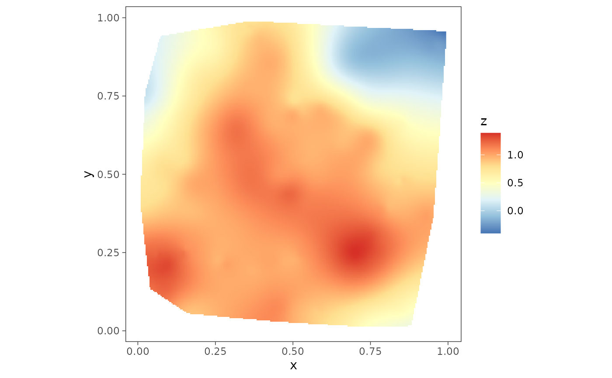

Fits a Bayesian spatial linear model with spatial process parameters and the noise-to-spatial variance ratio fixed to a value supplied by the user. The output contains posterior samples of the fixed effects, variance parameter, spatial random effects and, if required, leave-one-out predictive densities.
spLMexact(
formula,
data = parent.frame(),
coords,
cor.fn,
priors,
spParams,
noise_sp_ratio,
n.samples,
loopd = FALSE,
loopd.method = "exact",
verbose = TRUE,
...
)a symbolic description of the regression model to be fit. See example below.
an optional data frame containing the variables in the model.
If not found in data, the variables are taken from
environment(formula), typically the environment from which
spLMexact is called.
an \(n \times 2\) matrix of the observation coordinates in \(\mathbb{R}^2\) (e.g., easting and northing).
a quoted keyword that specifies the correlation function used
to model the spatial dependence structure among the observations. Supported
covariance model key words are: 'exponential' and 'matern'.
See below for details.
a list with each tag corresponding to a parameter name and containing prior details.
fixed value of spatial process parameters.
noise-to-spatial variance ratio.
number of posterior samples to be generated.
logical. If loopd=TRUE, returns leave-one-out predictive
densities, using method as given by loopd.method. Default is
FALSE.
character. Ignored if loopd=FALSE. If loopd=TRUE,
valid inputs are 'exact' and 'PSIS'. The option 'exact' corresponds to
exact leave-one-out predictive densities which requires computation almost
equivalent to fitting the model \(n\) times. The option 'PSIS' is
faster and finds approximate leave-one-out predictive densities using
Pareto-smoothed importance sampling (Gelman et al. 2024).
logical. If verbose = TRUE, prints model description.
currently no additional argument.
An object of class spLMexact, which is a list with the
following tags -
a list of length 3, containing posterior samples of fixed
effects (beta), variance parameter (sigmaSq), spatial effects
(z).
If loopd=TRUE, contains leave-one-out predictive
densities.
Values of the fixed parameters that includes
phi (spatial decay), nu (spatial smoothness) and
noise_sp_ratio (noise-to-spatial variance ratio).
The return object might include additional data used for subsequent prediction and/or model fit evaluation.
Suppose \(\chi = (s_1, \ldots, s_n)\) denotes the \(n\) spatial locations the response \(y\) is observed. With this function, we fit a conjugate Bayesian hierarchical spatial model $$ \begin{aligned} y \mid z, \beta, \sigma^2 &\sim N(X\beta + z, \delta^2 \sigma^2 I_n), \quad z \mid \sigma^2 \sim N(0, \sigma^2 R(\chi; \phi, \nu)), \\ \beta \mid \sigma^2 &\sim N(\mu_\beta, \sigma^2 V_\beta), \quad \sigma^2 \sim \mathrm{IG}(a_\sigma, b_\sigma) \end{aligned} $$ where we fix the spatial process parameters \(\phi\) and \(\nu\), the noise-to-spatial variance ratio \(\delta^2\) and the hyperparameters \(\mu_\beta\), \(V_\beta\), \(a_\sigma\) and \(b_\sigma\). We utilize a composition sampling strategy to sample the model parameters from their joint posterior distribution which can be written as $$ p(\sigma^2, \beta, z \mid y) = p(\sigma^2 \mid y) \times p(\beta \mid \sigma^2, y) \times p(z \mid \beta, \sigma^2, y). $$ We proceed by first sampling \(\sigma^2\) from its marginal posterior, then given the samples of \(\sigma^2\), we sample \(\beta\) and subsequently, we sample \(z\) conditioned on the posterior samples of \(\beta\) and \(\sigma^2\) (Banerjee 2020).
Banerjee S (2020). "Modeling massive spatial datasets using a conjugate Bayesian linear modeling framework." Spatial Statistics, 37, 100417. ISSN 2211-6753. doi:10.1016/j.spasta.2020.100417 .
Vehtari A, Simpson D, Gelman A, Yao Y, Gabry J (2024). "Pareto Smoothed Importance Sampling." Journal of Machine Learning Research, 25(72), 1-58. URL https://jmlr.org/papers/v25/19-556.html.
# load data
data(simGaussian)
dat <- simGaussian[1:100, ]
# setup prior list
muBeta <- c(0, 0)
VBeta <- cbind(c(1.0, 0.0), c(0.0, 1.0))
sigmaSqIGa <- 2
sigmaSqIGb <- 0.1
prior_list <- list(beta.norm = list(muBeta, VBeta),
sigma.sq.ig = c(sigmaSqIGa, sigmaSqIGb))
# supply fixed values of model parameters
phi0 <- 3
nu0 <- 0.75
noise.sp.ratio <- 0.8
mod1 <- spLMexact(y ~ x1, data = dat,
coords = as.matrix(dat[, c("s1", "s2")]),
cor.fn = "matern",
priors = prior_list,
spParams = list(phi = phi0, nu = nu0),
noise_sp_ratio = noise.sp.ratio,
n.samples = 100,
loopd = TRUE, loopd.method = "exact")
#> ----------------------------------------
#> Model description
#> ----------------------------------------
#> Model fit with 100 observations.
#>
#> Number of covariates 2 (including intercept).
#>
#> Using the matern spatial correlation function.
#>
#> Priors:
#> beta: Gaussian
#> mu: 0.00 0.00
#> cov:
#> 1.00 0.00
#> 0.00 1.00
#>
#> sigma.sq: Inverse-Gamma
#> shape = 2.00, scale = 0.10.
#>
#> Spatial process parameters:
#> phi = 3.00, and, nu = 0.75.
#> Noise-to-spatial variance ratio = 0.80.
#>
#> Number of posterior samples = 100.
#>
#> LOO-PD calculation method = exact.
#> ----------------------------------------
beta.post <- mod1$samples$beta
z.post.median <- apply(mod1$samples$z, 1, median)
dat$z.post.median <- z.post.median
plot1 <- surfaceplot(dat, coords_name = c("s1", "s2"),
var_name = "z_true")
plot2 <- surfaceplot(dat, coords_name = c("s1", "s2"),
var_name = "z.post.median")
plot1
plot2
